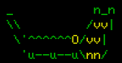

Jorm
...Is a multi user dungeon (MUD)
Explore a compact tightly danger filled world alongside your friends or alone!
Features a simplistic classless skill system where you are never punished.
Official web client supports mouse controls! play it like you would play an old school dungeon crawler!
All createures and npcs have unique and original ascii art!
The world is a linear obstacle course of turn based combat encounters and hidden paths.
Will you ever reach the end of the world and discover what lies there?
Good luck!
Feel free to contact me on Discord about any questions, or join our Discord server to contribute
ideas, report bugs, or hang out.
Fullscreen client: https://jorm.kurowski.xyz/play
Discord server: https://discord.gg/AZ98axtXc6
